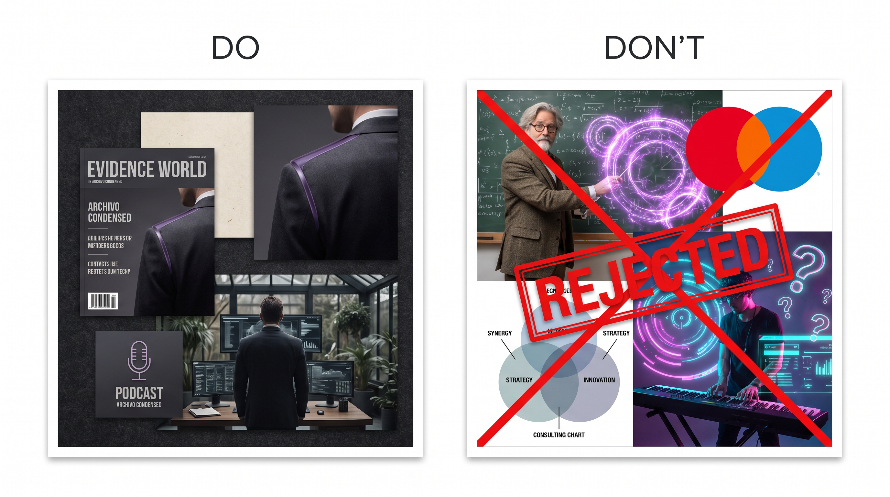

The Union
On a second look, the viewer notices subtle purple glass following a real structure while Michael remains the subject.
Two independent perspectives remain visible until judgment resolves them where they overlap.
This raster board is the lead proposal artifact for the direction. Treat it as discussion material, not logo approval, not final public imagery, and not identity canon.

Rational structure holds artistic depth. The world is quiet and luxurious, but never academic, theatrical, or decorative. Translucent color is the one new material force inside it.
Private identity review, long-form public thinking, speaking, publishing, and cross-disciplinary decision work after approval.
It can become professor cosplay, generic luxury, purple mysticism, a political badge, a consulting diagram, or a music-only reduction.
Keep competing perspectives translucent and legible until the evidence supports one responsible judgment, and let the overlap show it.
The direction is treated as a brand system, not a palette. These are the decisions that website, content, email, collateral, and social surfaces inherit.
Make Follow the question physical. Two translucent perspectives stay independently legible, and where they genuinely overlap a third color appears that neither field holds alone.
Dark mineral surfaces, tactile bone paper, exact evidence layers, intimate directional light, restrained cultural depth, and translucent color as a real material force.
Quiet, exact, artistic, serious, cultivated, and independently minded.
Keep competing perspectives visible until one overlap event resolves the composition.
Follow the question
Academic costume, generic premium styling, mystical decoration, founder theater, political badging, or a music identity with no wider field.
All fourteen Brand Slider positions are recorded from the live workshop board. These signals guide private review only.
Inspected raster boards and reference images for this pass. They teach composition, material, energy, source behavior, and application context.



These source-validated ingredients stay scoped inside this page until they are promoted into the approved identity source.
Archivo Narrow
Archivo
Condensed, exact display rhythm with a legible humanist body voice. No score-sheet mimicry.
Translucent purple glass that adapts to host lines it meets. No fixed shape. Small subtle accents along threads, seams, edges, and frames. Not literal water. Not a logo.
On a second look, the viewer notices subtle purple glass following a real structure while Michael remains the subject.
Temporary stylescape plus Section B proofs. Applications stay closed until Gate 4.
composed-inquiry v38 is the temporary art-direction board. Canon rebuild waits for Stage 5b.
Palette/type, visual do-dont, signature board, and HD hero candidates are in images/identity and images/signature.
Application production starts only after Identity Gate 4 approval.
Constraints for private visual studies only. They do not authorize applications, delivery, publication, or public likeness use.